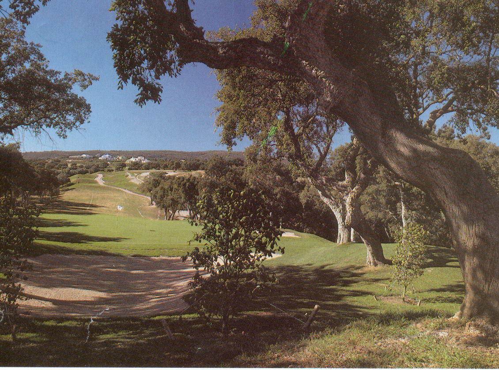

With breathtaking views of the mountains and the Mediterranean, Spain's Vaderrama is an ideal setting for one of the world's great championship courses. Don't let its elegance fool you: any wayward shot is soon punished.
Robert Trent Jones, the world's most famous course architect, believes Valderrama to be one of his finest. Opened in its present form in 1985, the course is a masterpiece that severely tests the professionals yet provides enjoyable golf for all standards. The guiding principle is flexibility: difficult par for the pros but easy bogies for the average golfer. The course is set against the backdrop of the Sierra Blanca Mountains in Spain ten miles east of Gibraltar. Gently undulating fairways lead to slick, subtly sloping greens. Cork and olive trees grace every corner and are an ever-present hazard.
Lush Condition
You are unlikely ever to play on better fairways. The turf is manicured and magnificent and the Bermuda grass thrives on the hot Andalucian summers and frost- free winters. But while the grass is lush it's also very tough. The rough is cut to a height of only 2in (5cm) but is long enough to cause problems. Your ball settles down in the grass and is difficult to move. Because the rough lines the fairways, there is no margin for error.
The greens are a generous size and receptive but many large bunkers await any loose shot. These bunkers aren't filled with sand but with finely crushed marble from local quarries - they present a dazzling picture when the sun is shining.

The 12th is a very challenging par 3 of 200m (219yd). Its dangers
lie in the four bunkers and the twisted cork trees that surround the green.
The carry over the valley means a long accurate strike is needed.
The Holes to Watch
|
|
|
|
|